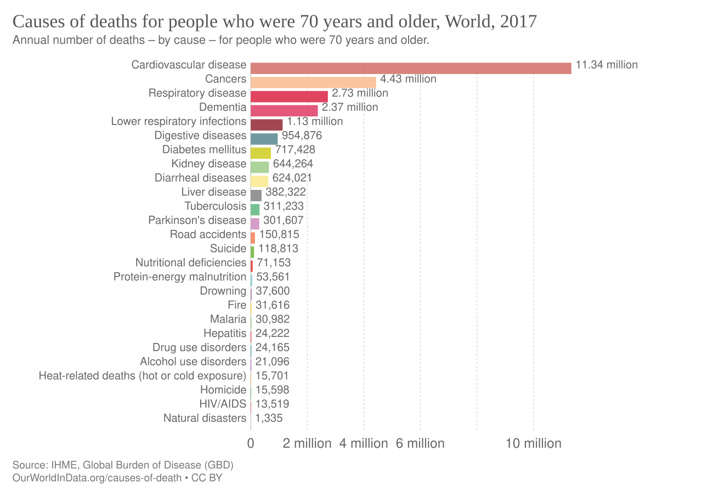
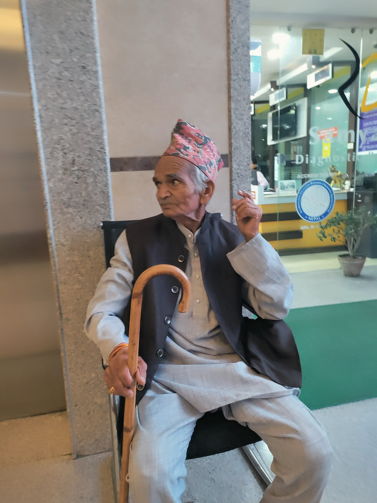
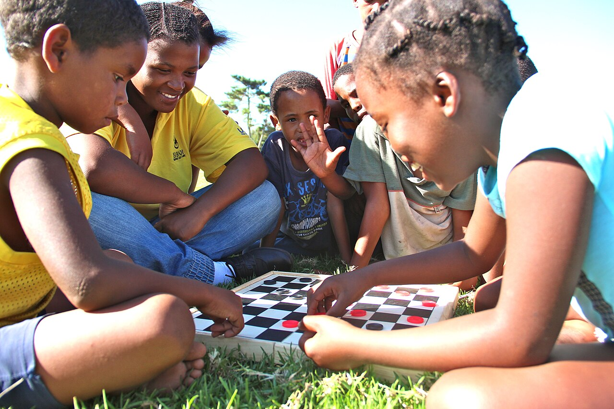
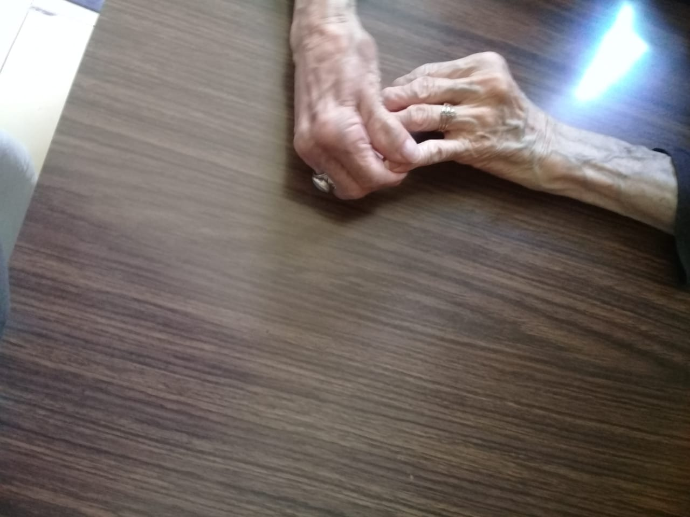
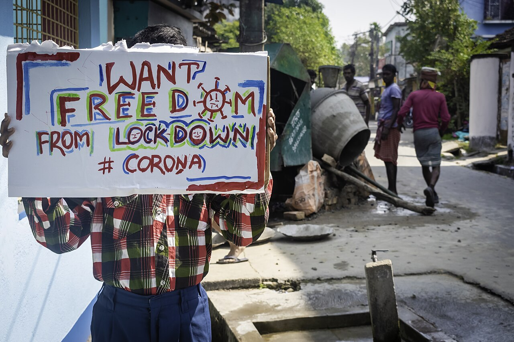

Death, Dying & Bereavement
Death is the one appointment every human life keeps, yet our understanding of it is anything but fixed. A three-year-old thinks the dead can come back; a school-age child grasps that they cannot; an adult must decide what a good death even means. This chapter follows death across the whole span of a life — how the idea of it forms in a child's mind, how people meet their own dying, how modern care tries to ease the end, how survivors grieve, and how every culture wraps the raw fact of loss in meaning. Nothing here is morbid. Understanding death is, in the end, a way of understanding what it is to be alive and mortal together.
By the end of this chapter you can
- Define death using biological, clinical, and social criteria, and distinguish clinical death from brain death.
- Trace how the concept of death develops in childhood and name its four components — irreversibility, universality, nonfunctionality, and causality.
- Connect children's understanding of death to Piaget's stages of cognitive development.
- Summarize Kübler-Ross's five stages of dying and evaluate what the model gets right and where it misleads.
- Distinguish hospice from palliative care, and explain the purpose of advance directives.
- Describe the process of grief and the features of healthy mourning, and tell normal grief apart from complicated grief.
- Compare cultural and religious perspectives on death, dying, and mourning.
Section 1Understanding death

What death is
Death sounds like it should be simple to define — a person is either alive or not — but the closer you look, the more the line blurs. Biological death is the permanent end of the physiological processes that sustain a living organism. In practice, clinicians work with two more precise ideas. Clinical death is the moment the heart stops beating and breathing ceases; for a brief window it can sometimes be reversed by resuscitation. Brain death is the irreversible loss of all brain activity, including the brainstem that drives breathing — and once it occurs, no intervention can restore the person, even if a machine keeps the heart pumping. Modern medicine created this distinction: before ventilators, the heart and the brain failed together, so no one needed to ask which one counted as death.
Death is also a social event, not only a bodily one. A society decides who is treated as dying, when mourning may begin, and what a corpse means. The psychologist Robert Kastenbaum called this whole web of customs, roles, and meanings the death system — the network of people (funeral directors, clergy, coroners), places (hospitals, cemeteries), times (anniversaries, memorial days), objects, and symbols through which a culture manages mortality. A death, in other words, is a biological fact filtered through a human world.
How the understanding of death develops
Children are not born understanding death; they build the concept piece by piece, and the pace tracks their broader cognitive growth. Researchers Mark Speece and Sandor Brent identified four components that together make up a mature grasp of death. Irreversibility — the dead do not come back. Universality — everything that lives eventually dies, including me and everyone I love. Nonfunctionality — the body's functions all stop; the dead do not eat, feel, or dream. And causality — death has physical causes, not magical ones. Most children assemble all four between roughly ages five and seven.
The developmental sequence maps neatly onto Piaget's stages. A preoperational child (about 2–7 years) tends toward magical and animistic thinking: death looks like sleep or a trip, something temporary and reversible, and the child may believe a wish or a bad deed caused it. As the child enters concrete operational thought (about 7–11 years), logic firms up and the four components click into place — death becomes final, universal, and physically caused. In adolescence, formal operational reasoning allows abstract, even philosophical reflection on mortality; yet the adolescent's personal fable — the private sense of being uniquely invulnerable — can coexist with full intellectual knowledge that everyone dies. Understanding death, then, is not one insight but a slow convergence of several.
| Age / Piaget stage | Typical grasp of death | What is still missing |
|---|---|---|
| Infant / sensorimotor (0–2) | No concept; senses separation and absence | Everything — reacts to loss of a caregiver, not to death itself |
| Preschool / preoperational (2–7) | Death seen as reversible, like sleep or a journey; often thinks a wish or act caused it | Irreversibility, universality, causality |
| School age / concrete operational (7–11) | All four components in place: final, universal, functions stop, physically caused | Abstract or existential framing |
| Adolescence / formal operational (11+) | Abstract, philosophical, and personal reflection on mortality | Emotional integration; personal fable can blunt felt vulnerability |
- Clinical death (heart and breathing stop) can sometimes be reversed; brain death (irreversible loss of all brain and brainstem activity) cannot.
- Death is a social event too — Kastenbaum's death system is the cultural web of roles, places, and symbols around it.
- A mature concept of death has four parts: irreversibility, universality, nonfunctionality, and causality, usually mastered by ages 5–7.
- The sequence follows Piaget: preoperational children see death as reversible; concrete-operational children grasp all four components.
Section 2Facing death: the five stages of dying

Kübler-Ross and the five stages
In 1969, the psychiatrist Elisabeth Kübler-Ross published On Death and Dying, drawn from hundreds of interviews with terminally ill patients at a time when doctors rarely told people they were dying and rarely spoke to those who knew. Listening closely, she heard recurring emotional themes and organized them into five stages, easily remembered by the acronym DABDA. Denial — "This can't be happening to me; there must be a mistake" — a protective shock that buffers the first blow. Anger — "Why me? It isn't fair" — resentment that may spill onto family, staff, or God. Bargaining — "If I can just live to see my daughter married, I'll never ask for anything again" — an attempt to negotiate a reprieve, often with a higher power. Depression — the quiet sorrow of anticipated loss, mourning in advance for everything and everyone that will be left behind. And Acceptance — not happiness, but a calm, clear-eyed readiness that lets a person put affairs in order and say goodbye.
Kübler-Ross's contribution was enormous. She dragged dying out of the shadows and insisted that the dying be spoken to, listened to, and accompanied. She gave clinicians and families a vocabulary for feelings that had gone unnamed, and she seeded the modern hospice and death-awareness movements. Her stages remain the most widely known framework in all of thanatology — the study of death.
What the model gets right — and where it misleads
For all its influence, the stage model has real limits, and Kübler-Ross herself warned against reading it too rigidly. The stages are not a fixed sequence: people move back and forth, skip stages, revisit them, or feel several at once. They are not universal — not everyone experiences all five, and culture, personality, and the nature of the illness shape the path. The gravest misuse is prescriptive: treating the stages as a checklist a "good" dying person must complete, so that a patient stuck in anger or denial is judged to be doing death wrong. Empirical support for a lockstep order is weak. The wiser way to hold the model is descriptively — as a catalog of common reactions that helps caregivers recognize and normalize what a dying person may feel, without forcing anyone through a script.
| Stage | Inner experience | What it might sound like |
|---|---|---|
| Denial | Shock, disbelief; a buffer against the news | "The tests must be wrong." |
| Anger | Resentment, injustice; often displaced onto others | "Why me? It's not fair." |
| Bargaining | Attempt to postpone or undo the outcome | "Just let me see one more spring." |
| Depression | Anticipatory grief; sadness for coming losses | "What's the point of anything now?" |
| Acceptance | Calm readiness; peace, not necessarily contentment | "I'm ready. I've said what I needed to." |
- Kübler-Ross's five stages of dying are denial, anger, bargaining, depression, and acceptance (DABDA).
- She transformed care by insisting the dying be told the truth, listened to, and accompanied.
- The stages are not a fixed or universal sequence; people skip, repeat, or blend them.
- Used descriptively the model normalizes feelings; used prescriptively it wrongly judges how someone "should" die.
Section 3Care at the end of life

Hospice and palliative care
For most of history, dying happened at home, quickly, and without much medicine to offer. Today most deaths in wealthy countries follow long chronic illness, and a whole field has grown up to make that ending as comfortable and meaningful as possible. Two terms are often confused. Palliative care is comfort-focused care for anyone living with a serious illness — relieving pain, breathlessness, nausea, and distress, and supporting the family — and it can run alongside curative treatment at any stage, even for a patient expected to recover. Hospice is a specific model of palliative care for people near the end of life, typically when a physician estimates six months or less and the goal shifts fully from cure to comfort. Hospice care usually happens where the patient lives, delivered by a team of nurses, aides, social workers, chaplains, and volunteers.
The modern movement traces to Dame Cicely Saunders, who founded St Christopher's Hospice near London in 1967 on a simple, radical idea: that a dying person deserves rigorous relief of physical pain and attention to emotional, social, and spiritual suffering — what she called total pain. The aim of hospice is not to hasten death or to postpone it, but to let people live as fully as possible until they die, awake, comfortable, and among the people who matter to them.
Advance directives: deciding in advance
Because a dying person may lose the ability to speak for themselves, the law lets adults record their wishes ahead of time in advance directives. A living will is a written statement of what treatments a person does or does not want — for example, whether to be placed on a ventilator or fed through a tube if there is no reasonable hope of recovery. A durable power of attorney for health care (also called a health-care proxy) names a trusted person to make medical decisions if the patient cannot. A do-not-resuscitate (DNR) order instructs clinicians not to attempt CPR if the heart stops, and newer POLST-type forms translate a seriously ill person's wishes into portable medical orders that travel with them. These documents spare families agonizing guesswork and protect a person's own values at the moment they can no longer voice them.
| Term | What it is | Key point |
|---|---|---|
| Palliative care | Comfort-focused care for serious illness | Any stage; can accompany curative treatment |
| Hospice | Palliative care near the end of life | Goal shifts fully to comfort; often prognosis of ~6 months |
| Living will | Written statement of treatment wishes | Says what you want done |
| Health-care proxy | Durable power of attorney for health care | Says who decides for you |
| DNR / POLST | Medical orders about resuscitation and treatment | Portable orders clinicians must follow |
- Palliative care relieves suffering at any illness stage and can accompany curative treatment; hospice is comfort care near the end of life.
- Cicely Saunders founded the modern hospice movement around the idea of total pain — physical, emotional, social, and spiritual.
- A living will states treatment wishes; a health-care proxy names who decides; a DNR/POLST gives portable medical orders.
- Advance directives protect a person's values and spare families from guessing.
Section 4Grief and mourning

Three words that are not the same
Everyday speech blurs them, but the field keeps them apart. Bereavement is the objective situation of having lost someone to death — the fact of it. Grief is the inner response: the storm of emotions, thoughts, and even physical sensations — sorrow, longing, guilt, anger, fatigue, an ache in the chest — that loss sets off. Mourning is the outward, often culturally shaped expression of grief: wearing black, sitting shiva, holding a wake, visiting a grave. One can be bereaved and grieving privately while the rituals of mourning are handled by a whole community. Grief is also normal and, in some form, nearly universal; it is love's cost, and it is not a disease to be cured.
How grief actually moves
Early models borrowed Kübler-Ross's stages and applied them to the bereaved, but researchers have since offered richer accounts. J. William Worden reframed grief as active work rather than passive stages — his four tasks of mourning: to accept the reality of the loss, to process the pain of grief, to adjust to a world without the person, and to find an enduring connection with them while moving forward into life. Margaret Stroebe and Henk Schut's dual-process model describes healthy grieving as an oscillation: the bereaved swing back and forth between loss-oriented coping (facing the grief, crying, remembering) and restoration-oriented coping (handling practical changes, forming new routines and roles), and both are necessary. And the continuing bonds perspective overturned an older assumption that healthy grief means "letting go": most people keep a transformed relationship with the person who died — talking to them, carrying their values, feeling their presence at milestones — and this ongoing connection is healthy, not pathological.
When grief becomes complicated
For most people, acute grief softens over months into a quieter, livable sorrow; the loss is never erased, but life reopens. In a minority, grief stays intense, disabling, and unremitting for a year or more — the person is caught in ceaseless yearning, unable to accept the death or re-engage with life. This is complicated grief, now recognized in diagnostic manuals as prolonged grief disorder, and it responds to specific treatment. It is worth distinguishing grief from major depression: classic grief comes in waves tied to reminders and preserves self-worth and the capacity for moments of comfort, whereas depression is more pervasive, flattening, and marked by worthlessness. Naming the difference matters, because ordinary grief needs companionship and time, while complicated grief and depression may need professional help.
| Feature | Normal (uncomplicated) grief | Complicated / prolonged grief |
|---|---|---|
| Course over time | Intensity eases over months; life reopens | Stays intense and disabling a year or more |
| Emotional pattern | Comes in waves, tied to reminders | Constant, unrelenting yearning |
| Engagement with life | Gradually resumes roles and relationships | Withdrawn; unable to re-engage |
| Acceptance | Slowly accepts the reality of the death | Persistent disbelief or refusal to accept |
- Bereavement is the loss, grief is the inner response, and mourning is its outward, cultural expression.
- Worden's four tasks and the dual-process model's oscillation describe grieving as active work, not fixed stages.
- Healthy grief often means continuing bonds — a transformed, ongoing connection — not "letting go."
- Complicated (prolonged) grief stays intense and disabling for a year or more and, like depression, may need treatment.
Section 5Death across cultures

Death is a cultural construction
The biology of dying is the same everywhere, but its meaning is made by culture. Whether death is a wall or a doorway, whether it should be met with wailing or with stillness, whether the body is burned, buried, or exposed, whether the dead are feared or invited back once a year — all of this varies enormously, and none of it is "natural." Cultures differ, too, in how openly death is discussed. Some are death-accepting, weaving mortality into daily life; some are death-defying, pouring resources into postponing it; and some are death-denying, hiding the dying in institutions and the dead behind cosmetics and closed doors. Studying this range guards against mistaking one's own customs for universal truths.
Religious and ritual frameworks
The world's spiritual traditions offer strikingly different maps of what death is and what mourners should do — and the rituals do real psychological work, structuring the chaos of loss into steps a community can take together. In Jewish practice, burial is prompt and mourners observe shiva, a seven-day period of receiving visitors, followed by staged returns to normal life over a year. Islamic tradition also favors swift burial, with a defined mourning period and prayers for the deceased. Hindu practice generally calls for cremation and a sequence of rites (antyeshti) that help the soul on its journey toward rebirth, reflecting a belief in reincarnation. Many Buddhist traditions frame death through impermanence, using the time around dying for meditation and merit toward a favorable rebirth. In Mexico's Día de los Muertos, families build altars and welcome the dead back joyfully for a night. What every tradition shares is the impulse to answer death not with silence but with meaning, ritual, and one another.
| Tradition | Common practice | Underlying view |
|---|---|---|
| Jewish | Prompt burial; shiva (seven days of mourning) | Communal support; staged return to life |
| Islamic | Swift burial; defined mourning period and prayers | Submission to God's will; life continues beyond death |
| Hindu | Cremation; antyeshti last rites | Reincarnation; freeing the soul for its journey |
| Buddhist | Meditation and merit-making around death | Impermanence; rebirth shaped by the mind at death |
| Día de los Muertos | Altars (ofrendas); welcoming the dead for a night | The dead remain part of the family across a permeable line |
- The biology of death is universal, but its meaning and the rituals around it are culturally constructed.
- Cultures range from death-accepting to death-defying to death-denying in how openly they meet mortality.
- Religious traditions — Jewish, Islamic, Hindu, Buddhist, and many others — offer distinct rites that give loss structure and meaning.
- Cultural humility means asking what a death means to a particular person and family, not assuming one's own customs are universal.
The chapter in one breath
- Death has biological, clinical, and social definitions; brain death is irreversible loss of all brain activity, unlike reversible clinical death.
- Children build the concept of death in four parts — irreversibility, universality, nonfunctionality, causality — usually by ages 5–7, tracking Piaget's stages.
- Kübler-Ross's five stages (denial, anger, bargaining, depression, acceptance) name common feelings of dying but are not a fixed or required sequence.
- Palliative care eases suffering at any stage; hospice is comfort care near the end of life, born of Cicely Saunders's idea of total pain.
- Advance directives — living wills, health-care proxies, DNR/POLST orders — let people direct their own care in advance.
- Bereavement is the loss, grief the inner response, mourning its outward expression; healthy grief keeps continuing bonds rather than "letting go."
- Complicated (prolonged) grief stays disabling for a year or more; the meaning of death and its rituals are shaped by culture and religion the world over.
ReferenceWords worth knowing
A quick reference for the terms in this chapter — skim it now, or circle back whenever a word trips you up.
- Advance directive
- A legal document recording a person's wishes for medical care in case they later cannot decide for themselves; includes living wills and health-care proxies.
- Anticipatory grief
- Grief that begins before a death, as a person or family mourns an expected loss in advance.
- Bereavement
- The objective state of having lost someone to death.
- Brain death
- Irreversible loss of all brain activity, including the brainstem; considered death even if machines maintain circulation.
- Clinical death
- The stopping of heartbeat and breathing, sometimes reversible by resuscitation within a short window.
- Complicated grief
- Intense, disabling grief that persists a year or more; recognized diagnostically as prolonged grief disorder.
- Continuing bonds
- The healthy maintenance of a transformed, ongoing connection with a person who has died.
- Death system
- Kastenbaum's term for the cultural network of people, places, times, objects, and symbols through which a society manages death.
- DNR (do-not-resuscitate) order
- A medical order directing clinicians not to attempt CPR if the heart or breathing stops.
- Dual-process model
- Stroebe and Schut's account of grieving as oscillation between loss-oriented and restoration-oriented coping.
- Grief
- The internal emotional, cognitive, and physical response to loss.
- Health-care proxy
- A durable power of attorney for health care; a person named to make medical decisions if the patient cannot.
- Hospice
- A model of comfort-focused care for people near the end of life, once the goal shifts from cure to comfort.
- Irreversibility
- The understanding that death is permanent and the dead do not return; one of the four components of the death concept.
- Kübler-Ross five stages
- Denial, anger, bargaining, depression, and acceptance (DABDA) — common reactions to dying, not a required sequence.
- Living will
- A written advance directive stating which treatments a person does or does not want near the end of life.
- Mourning
- The outward, culturally shaped expression of grief, such as rituals and customs.
- Nonfunctionality
- The understanding that all bodily functions cease at death; a component of the death concept.
- Palliative care
- Comfort-focused care that relieves suffering in serious illness and can accompany curative treatment at any stage.
- Thanatology
- The scientific study of death, dying, and bereavement.
- Total pain
- Cicely Saunders's concept that suffering in dying is physical, emotional, social, and spiritual at once.
- Universality
- The understanding that all living things eventually die, including oneself; a component of the death concept.